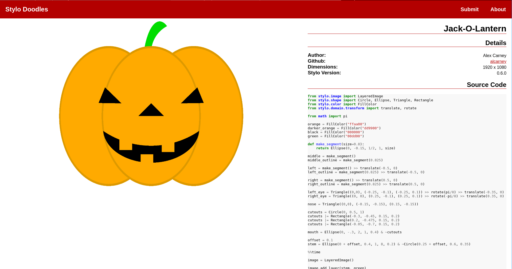

Setting up a Python WASI Environment with Nix
In this blog post I look at setting up a local development environment for the WASI build of Python using Nix. You can see the final result here
In this blog post I look at setting up a local development environment for the WASI build of Python using Nix. You can see the final result here
This blog post marks a change in my usage of Nix, I’m (just!) past the point of trying to get something to work and now starting to incorporate it into some of my regular workflows. So instead of trying to accomplish some major task, this post is a small collection of things I’ve learned over the past few weeks.
So far I’ve been learning how to use Nix by trying to package and define development shells for esbonio (see here if you are interested). While useful, the end result is not too dissimilar to what you can get with standard Python tooling. Indeed, the main reason I started looking into Nix was the promise of it being able to manage more than just Python libraries.
Since esbonio is a language server, it would be useful for Nix to create standardised environments where the language server is pre-configured for a given editor - great for debugging and demos!
In this blog post I try to define an environment in which Neovim is installed and configured to use the esbonio language server for reStructuredText files.
It turns out there were a few issues with the setup I put together in my previous post. This time I try and resolve them and get to the point where I have working overlays for both pytest-lsp and esbonio.
Last time, I experimented with writing a flake that defined development environments for the esbonio package spanning multiple Python versions.
During that process I also packaged pytest-lsp using an ad-hoc nix expression as part of the esbonio repo.
In this post I look into writing a similar flake for the pytest-lsp package itself, but this time using overlays to override and extend the nixpkgs package set.
If you are interested, you can find the final version of the code here.
Nix, depending on the context, can refer to a programming language, a package manager or a Linux Distro.
Personally, I’m most insterested in the package manager aspect and the promise of it being able to create declarative, reproducable development environments. With a configuration file and the nix develop command you can activate a kind of “virtual environment” that contains not just your Python packages - but any program defined by the configuration!
I find that idea particuarly exciting when working on a language server like esbonio, since it needs to be able to work against a variety of Python versions, Sphinx versions, as well as various code editors and all their versions! Having the ability to define a particular configuration and have some tool automatically recreate it would be amazing.
But I’m getting ahead of myself, let’s see if I can get to a point where I can easily test esbonio against a range of Python versions.
For the past year or so I’ve been working on a language server called Esbonio. It’s a language server designed to streamline the process of working with your Sphinx documentation projects. Currently its feature set is quite limited, but I think it does a good job of providing you with completion suggestions for all your roles, directives and cross-references.
Anyway with the recent releases of github.dev and vscode.dev I really want to see if I can bring Esbonio into the browser version of VSCode. There’s only one problem… Esbonio is written in Python! 😬

Previously, as part of my exploration into how programming languages are implemented, I wrote a very simple AST evaluator that knew how to add and multiply floats together. Since constructing these ASTs by hand is quite painful I thought it would be fun to come up with a frontend to my “programming language” which could do it for me.
Now your typical frontend would be some kind of parser built into the compiler/interpreter. However, while I’m definitely interested in parsing I don’t quite feel like tackling that just yet. Instead I’m going to have Python be the frontend and embed my toy language into it via a CPython Extension
Programming languages and their implementation is a topic I’ve been interested in for a long time and I thought it would be worth trying to get a bit more hands on and play with some of the ideas in this space. Choosing a topic somewhat at random I’ve chosen to take a look at implementing an Abstract Syntax Tree (AST).
After getting a “Hello, World!” WebAssembly application working I thought it would be fun to try and implement a toy programming language in the browser. However before I could even start thinking about parsers, abstract syntax trees and the like I had to be able to pass strings between my WebAssembly module and the surrounding JavaScript.
Turns out that is much trickier than I expected.
WebAssembly is something I’ve wanted to play with for quite a while now and I’ve finally got around to taking a look at it. In this post I describe how I managed to use TinyGo to compile a “Hello, World!” Go program into WebAssembly and execute it in the browser. So that I have something to refer back to I also describe setting up my development environment as a container using LXD.
Being an API for talking to GPUs and other compute devices every Vulkan program starts off by looking for an appropriate physical device to use. In this post I write a little C program that initialises the Vulkan API and lists out the available devices in the system.
This is part of my “Learning Vulkan” series where I try to figure how to use Vulkan to explore various concepts in graphics programming. As mentioned in the Overview I don’t necessarily know what I’m doing!
I have always been interested in graphics and have on numerous occasions tried to dip my toe into the world of OpenGL and more recently Vulkan. However I have never been able to get past the “Hello, World” of these technologies - drawing a triangle on screen, I think mostly becuase I never really had a goal in mind once I got that far…
But that’s (hopefully) about to change! What better excuse than a new decade to jump back into this world for the 100th time and try to get to all those interesting ideas I see people playing with all the time!
This post makes use of a number of interactive elements to help illustrate a few concepts. Unfortunately these do not yet work on mobile devices - sorry mobile users!
I have for quite some time now wanted to play around with web development some more, particularly using web technologies to build user interfaces of some kind. However there is just so much out there it’s been impossible for me to really get anywhere past a “Hello, World!” tutorial before I find myself trying out the next new shiny.
So I’ve decided to abandon everything and try a bottom up approach where I see how far I can push the core web technologies - HTML, CSS and JavaScript. Hopefully then by the time I start using one of the gazillion libraries out there I will have a better understanding of why I needed it in the first place.
In this post I will be looking at implementing clicking and dragging functionality using only vanilla JavaScript. Clicking and dragging as a concept can apply to many kinds of interactions so in this instance I’m specifically referring to clicking on an SVG element moving it around on the page as illustrated by the demo above.
Today I Learned that Python’s standard library has a cmd module and it is awesome!

A few weeks back at PyConUK I gave my first lighting talk at a conference. During that talk I spoke publically about stylo for the first time. Stylo is a Python library that I have been working on for just over a year and a half and it aims to make the creation of images easier by bringing together ideas from programming and mathematics.
Version 0.6.0 was recently released which included the first feature that wasn’t written by me! It’s very exciting not only to see other people starting to take an interest in the project but taking the time to make a contribution!
Now that stylo seems to be getting to the point that it might me useful to other people wouldn’t it be great if there was a community driven example gallery that people could get inspired by? - Well now there is! And it’s called Stylo Doodles
Not that you would have known it, but I’ve had a blog since 2014. Well 2015 if you’re feeling generous, the first (and only) post went up in the last few hours of New Year’s Eve. It was a look back on some of the projects I had worked on that year and I announced my intentions to start blogging.
Fast forward nearly 4 years and here I am announcing my intentions to start blogging - again. So I guess you are wondering what happened?
I got lost.
My first attempt at running a blog was using Jekyll and for some mystical reason (It’s been so long I can’t actually remember why), I decided that it was not the static site generator I was looking for. So I promptly set off on a voyage of discovery in search of the ultimate static site generator.